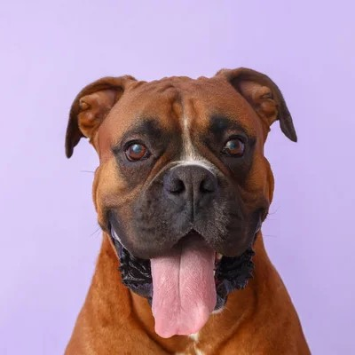
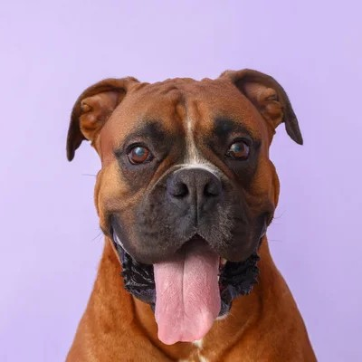

The DogFather Rescue
At The DogFather Rescue, we are dedicated to rescuing and rehoming dogs in need. Our mission is to provide every dog with a second chance at happiness, ensuring they find a loving family to call their own. Whether you're looking for an energetic puppy or a loyal companion, we're here to help you make a lasting connection.
Adopt. Love. Change a Life.
Adopting a pet is a life-changing decision that saves lives. When you choose adoption, you’re giving a loving animal a second chance and helping reduce the number of homeless animals in shelters. Beyond making a difference, adopting offers you an amazing, loyal companion who will bring joy, comfort, and excitement into your life. Each adoption not only changes one animal’s life but also makes space for us to help even more animals in need.
Bringing a new pet home requires commitment and responsibility. Before adopting, it’s essential to consider your lifestyle, budget, and long-term plans. Pets need daily care, love, medical attention, and companionship. Ask yourself if you have the time, space, and resources to care for an animal’s physical and emotional needs. The joy of pet ownership is incredible, but ensuring you’re truly prepared will help set both you and your new pet up for a happy, fulfilling future together.
Our adoption process is designed to help you find the perfect match for your home. Start by visiting our available pets online or in person at our shelter. Once you’ve found a pet you’re interested in, fill out an adoption application and schedule a meet-and-greet. Our team will guide you through the steps, including an interview to ensure it’s the right fit. After approval, we’ll help you complete the adoption, provide initial supplies, and share resources for a smooth transition.
Your adoption journey doesn’t end when you leave the shelter—it’s just the beginning! We’re here to support you and your new pet with helpful resources, tips, and advice. Our team can assist with behavior training, answer questions, and provide recommendations on health care and nutrition. We want your new family member to thrive, and we’re here every step of the way to ensure your pet’s long, happy life in their forever home.
Make a Difference Today – Support Our Shelter
Your donation has the power to save lives. Every dollar you give helps us provide food, shelter, medical care, and love to animals in need. At our shelter, we work tirelessly to rescue, rehabilitate, and rehome pets who are looking for a second chance.